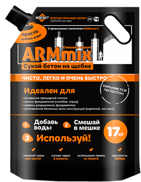

7 причин использовать "Сухой бетон BRONIT"
Маркетологи компании BRONIT, проведя массу исследований, опросов и экспериментов, создали уникальный продукт "Сухой бетон BRONIT" в инновационной герметичной упаковке, обладающий преимуществами перед аналогичной продукцией, используемой в строительстве и ремонте:
- "Сухой бетон BRONIT" не пачкает одежду и салон автомобиля;
- "Сухой бетон BRONIT" позволяет сэкономить на транспортировке, загрузке и выгрузке мешков смеси, перевозя его на своём авто;
- "Сухой бетон BRONIT" делает процесс приготовления готового раствора простым и доступным, как для мужчин, так и для женщин;
- "Сухой бетон BRONIT" позволяет получать качественный бетон на щебне, в количестве от 0.1 куба, при этом экономя на спецтранспорте или заказе отдельных составляющих (песок, щебень, цемент часто остаются неиспользованными, пачкают и занимают пространство);
- "Сухой бетон BRONIT" позволяет хранить и использовать качественный бетон марки М200 в удобном месте (как в помещениях, так и на улице) без пыли и грязи, не занимая много места, всегда в вертикальном положении;
- "Сухой бетон BRONIT" позволяет сэкономить на ёмкостях, миксерах, лопатах (которые, в последствии, могут оказаться ненужными), а также - на использовании рабочей силы;
- "Сухой бетон BRONIT" позволяет делать бытовой ремонт или строительные работы быстро, легко и приятно.
"Сухой бетон BRONIT" идеален для:
- Обустройства монолитных стяжек, отмосток (дорожек). Примечание: площадь содержимого пакета в готовом растворе составляет квадратную плиту 40х40см, толщиной 5 см. Или 40х40см, толщиной 10 см(бордюр).
- Вертикального бетонирование труб, профилей, деревянных столбов для гамака, декоративных оград, металлических заборов.
- Замены разрушенных фрагментов бетонных оснований, фундаментов, лестниц.
- Заполнения больших отверстий в бетонных полах и проездах.
- Создание бетонных оснований, лёгких фундаментов (печи, мангалы, скамейки, беседки).
Подготовка основания к использованию "BRONIT сухой бетон".
Основание должно быть сухим, структурно прочным, очищенным от пыли, жировых загрязнений, смазочных масел, лакокрасочных покрытий и т. п. (веществ снижающих адгезию-сцепление). Осыпающиеся и непрочные поверхности следует удалить. Неводостойкие покрытия очистить или смыть. Основание необходимо заранее увлажнить.
В рамках концепции ТМ BRONIT, направление BRONITtechnologies - создание и непрерывное усовершенствование продукции BRONIT, с применением инновационной добавки "NANOсхват" и упаковки "BRONITpack", произведён новый продукт BRONIT ARMmix. Продукция была успешно протестирована и показала ряд преимуществ в свойствах готового бетона марки М200, перед аналогичными образцами разных производителей.